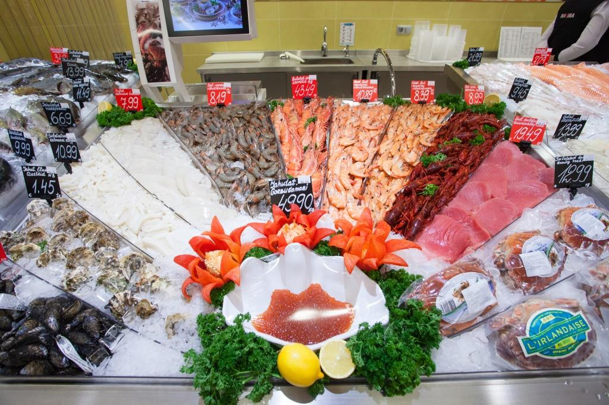
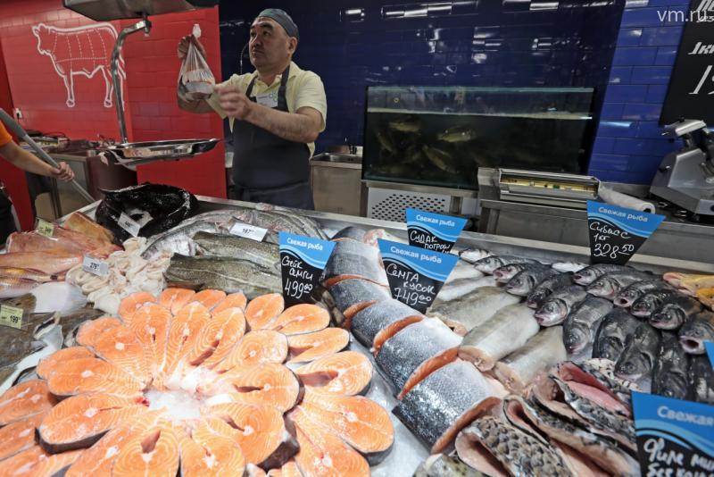

Рыбины выкладываются на предварительно рассыпанный лед вертикальными рядами с соответствием размерного ряда. К покупателю они должны размещаться боковой стороной или головой. Наиболее дорогостоящие сорта занимают центральное место на витрине, в то время как бюджетные образцы размещают по краям.
Для филе и стейков необходимо предусмотреть раздельное место размещения от цельных тушек. Для них при выкладке применяются подносы или различные прокладки, непосредственный контакт со льдом недопустим. Недопустима и выкладка в несколько слоев. Создать более привлекательный внешний вид композиции позволяет зелень и лимонные ломтики.
Мороженная в продаже помещается в морозильные камеры с соответствующим температурным режимом с разделение по виду и сорту. Для товара, поставляемого без упаковки, необходимо заворачивать тушки в пакеты или слюду. Обеспечить необходимо не только рассортировку, но и удобства доступа к выкладываемым товарам. Для филе необходимо выделение отдельного морозильника или отсека с продажей в заводской упаковке или разделение по пакетам массой не более 1кг. Отдельного размещения требуют и морепродукты (кальмары, креветки, мидии).
Но об этом можно почитать и в интернете, воспользовавшись поиском от Яндекса

Это была картинка с абсолютной ссылкой
Это была картинка с относительной ссылкой
